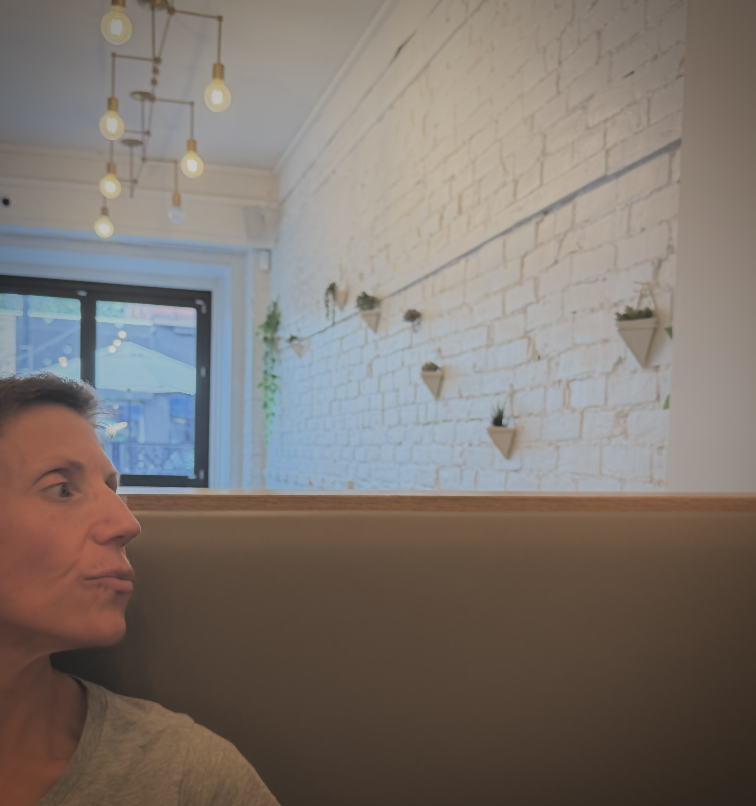
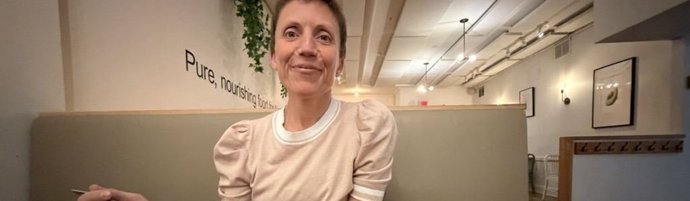

Registered Psychotherapist in Ottawa, Ontario (virtual and in-person sessions)
Supporting individuals and couples through: trauma, anxiety, depression, grief, relationship challenges, addictions, eating disorders, women's health experiences, chronic pain, and life transitions.
Beginning therapy can feel overwhelming, but you don't have to navigate it alone.
My name is Sarah Richardson, and as a Registered Psychotherapist (RP), I will be by your side as you explore your lived experiences. I provide a warm, compassionate, and non-judgmental space where you can explore your experiences, better understand yourself, and move toward lasting change.
Whether you're feeling stuck, overwhelmed, disconnected, or simply ready for something different, therapy can help you reconnect with yourself and build a life that feels more manageable and meaningful. I believe that healing starts with feeling understood.
Currently accepting new clients for in-person and virtual therapy — Book a free 20-minute consultation to see if we're a good fit.
Book a Free 20-Minute Consultation
Areas of Focus
Choosing to begin therapy is a meaningful step, and I'm honoured to be part of that journey. My approach is grounded in compassion, curiosity, and collaboration. I believe therapy works best when you feel safe, respected, and genuinely understood. Together, we'll explore what's bringing you to therapy, develop practical tools, and work toward meaningful, lasting change.
Before becoming a Registered Psychotherapist, I spent 15 years as a Registered Massage Therapist. This experience shaped my understanding of the powerful connection between the mind and body, and continues to influence how I work today. Stress, trauma, and emotional pain often live in both our thoughts and our bodies. I believe that learning how to support you as a whole person can allow for healing to take place.
I have experience supporting individuals and couples navigating trauma, anxiety, depression, grief, relationship concerns, addictions, eating disorders, chronic pain, women's health experiences, and neurodivergence. Every person's story is different, and therapy should reflect that. I tailor treatment to your goals, pace, and individual needs. I currently offer both in-person sessions and virtual therapy. I'd love to connect and answer any questions you may have.
Registered Psychotherapist | CRPO Registration #12900
I offer individual therapy and couples therapy for life's challenges. My work is client-centred, trauma-informed, and adaptive to support your needs.
Whether trauma occurred in childhood or adulthood, its effects can shape how safe we feel in our bodies, our relationships, and our sense of self. I offer a paced, trauma-informed approach that respects your readiness.
Anxiety can show up as constant worry, physical tension, racing thoughts, or a sense of being on edge. We'll work together to understand what's driving it and build practical tools to help you feel more grounded.
Grief doesn't follow a straight line, and there's no "right" way to move through it. I offer a compassionate space to process loss — of a person, a relationship, an identity, or a life you imagined.
Patterns in our relationships often connect back to earlier experiences and attachment styles. We'll explore what's not working, build communication and boundary-setting skills, and work toward healthier, more fulfilling connections.
Addiction is often a response to pain, not a personal failing. I approach this work with compassion and without judgment, helping you understand the role addiction has played and build sustainable paths forward.
Disordered eating is rarely just about food — it often connects to control, identity, trauma, or emotional regulation. I provide a supportive, non-judgmental space to explore these connections and work toward a healthier relationship with yourself.
Whether you're exploring a new diagnosis, have long known you think and experience the world differently, or are supporting a neurodivergent family member, therapy can be a space to work with your neurodivergence rather than against it. I take a strengths-based, affirming approach to help you understand your own patterns, navigate a world not built with you in mind, and process the anxiety, masking fatigue, or relationship strain that can come along with it.
Living with chronic pain affects far more than the body — it touches mood, identity, relationships, and daily functioning. Drawing on my 15 years of experience as a Registered Massage Therapist alongside my psychotherapy training, I offer a uniquely body-informed approach to the emotional side of chronic pain.
Including endometriosis, perimenopause, decisions around whether to have children, and fertility struggles — these carry emotional weight that often goes unacknowledged. These experiences can bring up grief, uncertainty, identity shifts, and complicated feelings that deserve a dedicated space to process. I offer compassionate, informed support for women navigating these transitions, drawing on my background in both body-based and psychotherapeutic work.
Yes — I offer both virtual and in-person sessions to fit your needs and comfort level.
Our 20-minute consultation is an opportunity to see whether we're a good fit. We can talk about what's bringing you to therapy, discuss your goals, ask any questions you may have, and get a feel for whether we're a good fit to work together going forward.
Sessions are available in 50, 75, or 90-minute formats.
Sessions are $165 for 50 minutes. Sliding-scale spaces are available through a waitlist.
There is a 24-hour cancellation requirement. If an appointment is late-cancelled or missed, clients are charged the full session fee.
Yes, I am currently accepting new clients for both virtual and in-person sessions.
If you're considering therapy or have questions about working together, I'd be happy to hear from you. Book a free 20-minute consultation to see whether we're a good fit.

Email: sarahrichardsonpsychotherapy@gmail.com
Phone: (613) 290-1949
Location: Ottawa, Ontario
I typically respond within 24-48 hours. If you're in crisis, please contact your local emergency services or call the crisis line at 1-833-456-4566.